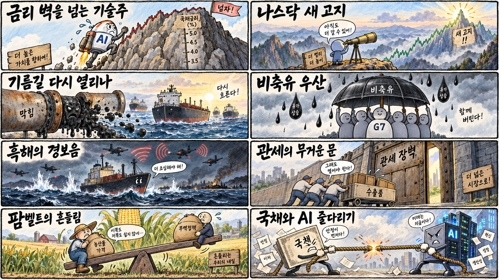
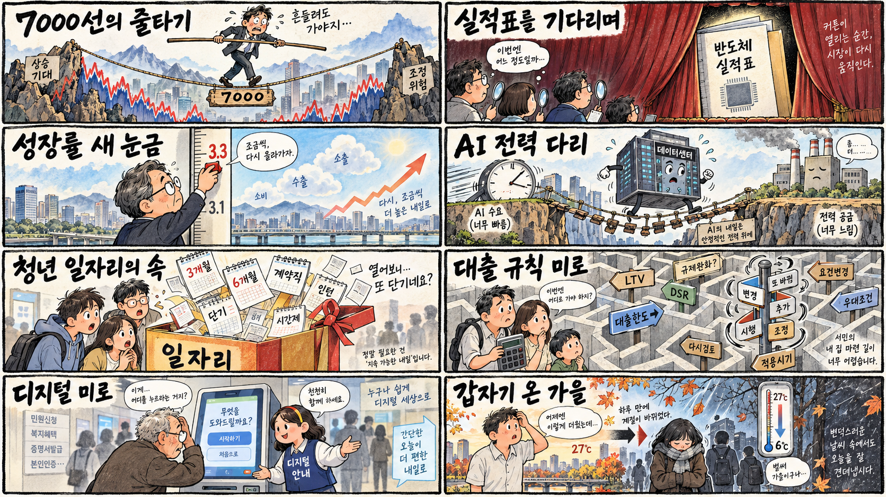

01
알리바바 · 107.45→110.80달러 · +3.12%
내용요약 시가 대비 +3.12%로 조사 종목 중 상승폭이 가장 컸습니다.
예상여파 중국 플랫폼주의 위험선호 개선을 시사하지만 개별 호재와 규제 환경은 별도로 확인해야 합니다.
MORNING_BRIEFING_20261006
작성 시각: 2026-10-06 06:37 KST · 직전 미국 정규장과 2026-10-06 KST 당일 공개 기사 기준
직전 미국 정규장인 10월 5일 뉴욕증시는 다우 +0.18%, S&P 500 +0.66%, 나스닥 +1.05%로 상승했습니다. 미국 10년물 금리가 높은 수준을 보였지만 AI 대형주 매수세가 기술주를 끌어 나스닥은 사상 최고치를 기록했다는 당일 마감 보도가 나왔습니다. 한국 증시는 연휴 뒤 첫 거래에서 반도체 실적 기대와 장기금리·환율 부담의 힘겨루기가 예상됩니다.
| 지수 | 종가 | 등락률 | 한국 증시 시사점 |
|---|---|---|---|
| 다우존스 | 51,267.90 | +0.18% | 국채금리 상승 속 지수 회복력 확인 |
| S&P 500 | 7,773.95 | +0.66% | 국채금리 상승 속 지수 회복력 확인 |
| 나스닥 종합 | 27,477.31 | +1.05% | AI 대형주 랠리가 반도체 투자심리에 우호적 |
높은 국채금리에도 AI 대형주 랠리로 사상 최고치를 새로 썼습니다.
중동 수출 회복과 G7 비축유 방출 약속이 물가 부담을 일부 낮췄습니다.
연휴 전 최근 거래일 종가 기준 7,000선을 지켰고 오늘 실적 기대를 시험합니다.
장전 시가·수급 미형성과 검증 표본 부족으로 강제 추천 없이 관망합니다.
10월 5일 보고서는 공식 추천을 내지 않았습니다. 게시 당시 판단을 유지하며 사후 종목을 추가하지 않습니다.
| 시장 | 종가 | 등락률 | 기준 |
|---|---|---|---|
| KOSPI | 7,003.74 | +0.46% | 10월 2일 정규장 · 시가 대비 +0.94% |
| KOSDAQ | 893.29 | -0.11% | 10월 2일 정규장 · 시가 대비 +0.01% |
| 다우존스 | 51,267.90 | +0.18% | 미국 10월 5일 정규장 |
| S&P 500 | 7,773.95 | +0.66% | 미국 10월 5일 정규장 |
| 나스닥 종합 | 27,477.31 | +1.05% | 미국 10월 5일 정규장 |
메타 +2.00%, 엔비디아 +1.20%, 브로드컴 +1.32%로 기술주 상승을 주도했습니다.
알리바바는 시가 대비 +3.12%로 조사 종목 중 가장 강했습니다.
마벨은 시가 대비 -1.80%로 조사 종목 중 낙폭이 컸습니다.
보잉 -0.97%, 홈디포 -0.84%로 지수 상승 속 종목 차별화가 나타났습니다.
내용요약 시가 대비 +3.12%로 조사 종목 중 상승폭이 가장 컸습니다.
예상여파 중국 플랫폼주의 위험선호 개선을 시사하지만 개별 호재와 규제 환경은 별도로 확인해야 합니다.
내용요약 시가 대비 +2.69%로 대형 성장주 가운데 강세였습니다.
예상여파 성장주 선호에는 우호적이지만 국내 이차전지 전체의 매수 근거로 단순 확장하면 안 됩니다.
내용요약 시가 대비 +2.00%로 AI 대형주 랠리에 힘을 보탰습니다.
예상여파 AI 설비투자 기대는 데이터센터 공급망에 긍정적이나 비용 증가와 수익화 속도를 함께 봐야 합니다.
내용요약 시가 대비 -1.80%로 조사 종목 중 가장 약했습니다.
예상여파 반도체 업종 내부 차별화를 보여주며 국내 관련주는 고객·제품 구성에 따라 반응이 달라질 수 있습니다.
내용요약 시가 대비 -0.97%로 산업주 일부의 약세가 나타났습니다.
예상여파 항공 공급망 투자심리에 단기 부담이지만 공개 일별 시세만으로 단일 원인을 단정하지 않았습니다.
미국 나스닥의 +1.05% 상승과 AI 대형주 강세는 국내 반도체·전력·냉각 인프라 심리에 우호적입니다. 중동 수출 회복에 따른 유가 하락은 운송·화학·소비 비용 부담을 덜 수 있습니다. 다만 미국 장기금리 상승과 연휴 뒤 누적 재료의 일시 반영, KOSPI 7,000선의 높은 변동성을 감안해 시초가 갭을 추격하기보다 외국인 수급과 삼성전자 실적 기대의 지속성을 확인해야 합니다.
오늘은 추천 없음 — 현금 관망
06:30 KST 장전에는 당일 시가와 호가 유동성이 형성되지 않았습니다. 전일까지의 외국인·기관 수급, 컨센서스 변화, 공식 촉매, 30건 이상 보정 표본을 모두 갖춰 종합점수 75점·상승확률 60%·예상 손익비 1.5를 동시에 검증한 후보가 없습니다.
관심 연결종목 AI 냉각·전력기기·HBM 관련주는 관찰 대상일 뿐 매수 추천이 아닙니다. 연휴 뒤 갭 상승 시 추격매수하지 않습니다.
숫자와 HBM 전망이 7,000선 안착을 뒷받침하는지 봅니다.
기술주 랠리에도 높은 미국 10년물 금리가 가치평가를 누르는지 확인합니다.
WTI 90달러 아래 흐름과 원화 반응이 비용 부담을 낮추는지 점검합니다.
대미 투자·반도체 특구 논의를 실제 예산과 시행계획으로 구분합니다.
핵심 요약: AI 투자의 병목이 칩에서 냉각·전력과 보안으로 넓어지는 가운데 콘텐츠 워터마크와 투자 선별도 중요해졌습니다. 인프라 수요는 강하지만 실제 수주·수익성·보안 기본기를 확인해야 합니다.
내용요약 LG전자가 북미 인공지능 데이터센터에 5GW 규모 냉각 솔루션을 공급한다는 당일 보도입니다. 연산 설비 확대가 칩뿐 아니라 냉각·공조 시장을 키우는 흐름을 보여줍니다.
예상여파 냉각 효율과 대형 수주 실적이 데이터센터 인프라 기업의 차별화 요인이 되겠지만 계약 인식 시점과 수익성을 함께 봐야 합니다.
내용요약 클로드에 이어 챗GPT도 유럽연합 지역에서 인공지능 생성 텍스트를 식별하는 워터마크를 우선 적용한다는 당일 보도입니다.
예상여파 AI 콘텐츠 투명성은 높아질 수 있으나 우회 가능성과 오탐 문제 때문에 플랫폼·교육·미디어의 보조 검증 체계가 필요합니다.
내용요약 국내 스타트업 투자가 3분기 만에 10조원을 넘었고 자금이 AI 반도체와 바이오에 집중됐다는 당일 보도입니다.
예상여파 핵심 기술 기업의 자금 조달에는 긍정적이지만 특정 분야 쏠림과 이른바 AI 워싱을 가려내는 실사 중요성이 커집니다.
내용요약 AI 투자 확대의 수혜를 삼성전자·SK하이닉스 전체 생태계에 일률적으로 적용하지 말고 실제 공급 관계와 실적 기여를 선별해야 한다는 당일 분석입니다.
예상여파 막연한 낙수효과보다 HBM 인증, 고객 구성, 마진과 설비투자 회수기간을 종목별로 확인해야 합니다.
내용요약 AI 기반 공격이 고도화되면서 망분리만으로는 한계가 있어 기본 보안통제와 능동 대응을 병행해야 한다는 당일 보도입니다.
예상여파 보안 자동화 수요는 늘겠지만 접근권한·백업·탐지 대응 같은 기본기가 약하면 새 도구만으로 위험을 줄이기 어렵습니다.
핵심 요약: 중동 원유 수출 회복과 G7 비축유 방출 약속이 유가를 낮췄지만 흑해 항로 위험은 커졌습니다. 미국의 관세 신호와 농업지대 민심, 일본·중국의 긴장 완화 움직임이 통상·외교의 방향을 가를 변수입니다.
내용요약 중동 원유 수출 증가와 주요 7개국의 비축유 방출 약속으로 국제유가가 1%대 하락했다는 당일 보도입니다.
예상여파 WTI 90달러 아래 안정이 이어지면 물가·운송비 부담을 낮출 수 있지만 중동 정유시설과 해상 운송 위험은 남아 있습니다.
내용요약 흑해에서 상선이 화재 뒤 침몰해 사망자가 발생했고 우크라이나가 러시아 드론 공격을 주장했다는 당일 보도입니다.
예상여파 흑해 항로의 보험료와 곡물·원자재 운송 위험이 다시 높아질 수 있어 사실관계와 항로 통제 상황을 지켜봐야 합니다.
내용요약 미국 농업 중심지 캔자스에서도 현 정부에 대한 지지 균열이 나타난다는 현지 르포입니다.
예상여파 농가 비용·관세·수출 여건이 미국 중간선거 구도와 향후 통상정책의 강도를 바꾸는 변수가 될 수 있습니다.
내용요약 미국 대통령이 오하이오 연설에서 핵전력과 최대 300% 관세를 거론했다는 당일 해외 보도입니다.
예상여파 강한 관세 신호가 실제 정책으로 이어질 경우 자동차·부품·소재 공급망과 대미 투자 비용의 불확실성이 커질 수 있습니다.
내용요약 일본이 중국과의 긴장 완화 가능성을 시사했다는 당일 해외 보도입니다.
예상여파 대화가 구체화하면 동아시아 교역 심리에 도움이 되지만 안보·기술 통제 갈등이 함께 완화되는지는 별도 확인이 필요합니다.

핵심 요약: KOSPI 7,000선은 반도체 실적과 높아진 성장률 전망을 시험합니다. 대미 투자·산업특구 논의, 청년 일자리의 질, AI 전력 공급과 큰 일교차가 정책과 생활의 핵심 점검 대상입니다.
내용요약 최근 거래일 KOSPI가 7,000선에 턱걸이한 가운데 삼성전자 3분기 실적 발표가 지수의 다음 분수령이라는 당일 보도입니다.
예상여파 실적 기대가 선반영된 만큼 매출·영업이익뿐 아니라 HBM 인증과 향후 전망이 반도체 및 지수 변동성을 좌우할 수 있습니다.
내용요약 아세안+3 거시경제조사기구가 한국 성장률 전망을 3.3%로 높였다는 당일 보도입니다.
예상여파 성장 눈높이 상향은 위험자산 심리에 우호적이나 AI 투자 둔화와 수출 집중 위험이 현실화하면 전망 변동성이 커질 수 있습니다.
내용요약 산업통상 분야 국정감사에서 대미 투자, 호남 반도체와 산업 메가특구가 주요 쟁점으로 다뤄진다는 당일 보도입니다.
예상여파 정책 방향과 재원 배분이 반도체·지역 산업 투자 일정에 영향을 줄 수 있어 확정된 예산과 시행계획을 구분해야 합니다.
내용요약 정부가 제시한 청년 일자리 20만개의 상당 부분이 단기·비정규직이라는 비판을 다룬 당일 보도입니다.
예상여파 일자리 숫자보다 지속기간·임금·민간 취업 전환율을 공개해야 정책 효과와 청년 체감의 간극을 줄일 수 있습니다.
내용요약 전국 출근길 기온이 10도 안팎으로 떨어지고 강원 일부에 한파특보와 서리·얼음 가능성이 있다는 당일 예보입니다.
예상여파 큰 일교차에 대비해 겉옷을 준비하고 농작물 냉해·도로 결빙이 예상되는 지역은 이른 아침 안전을 점검해야 합니다.
